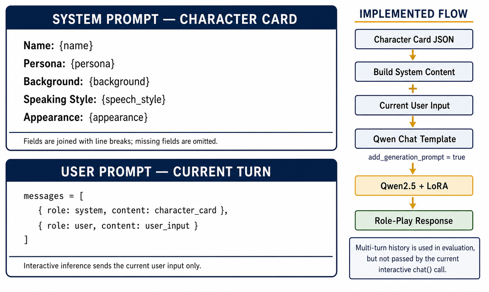
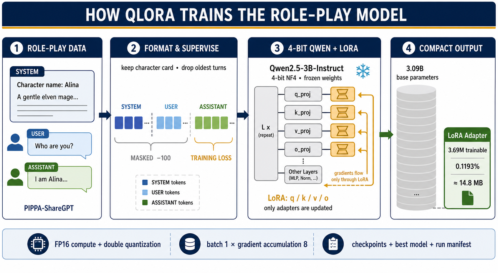
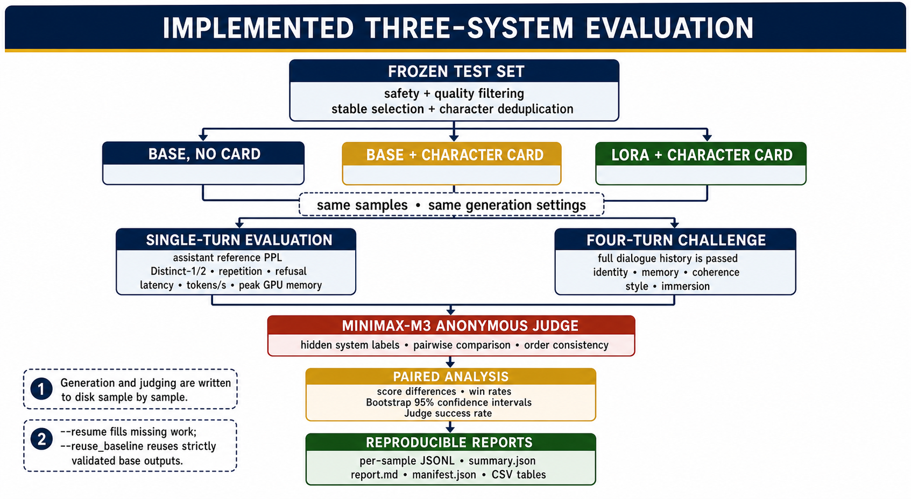
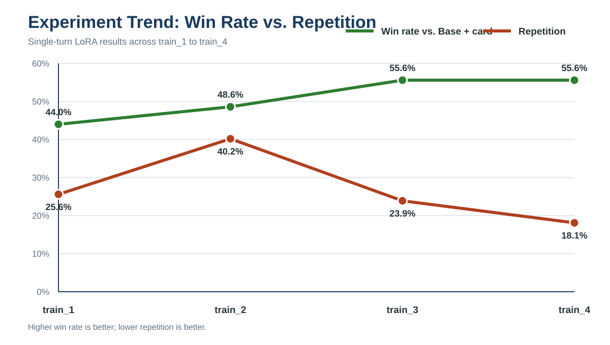
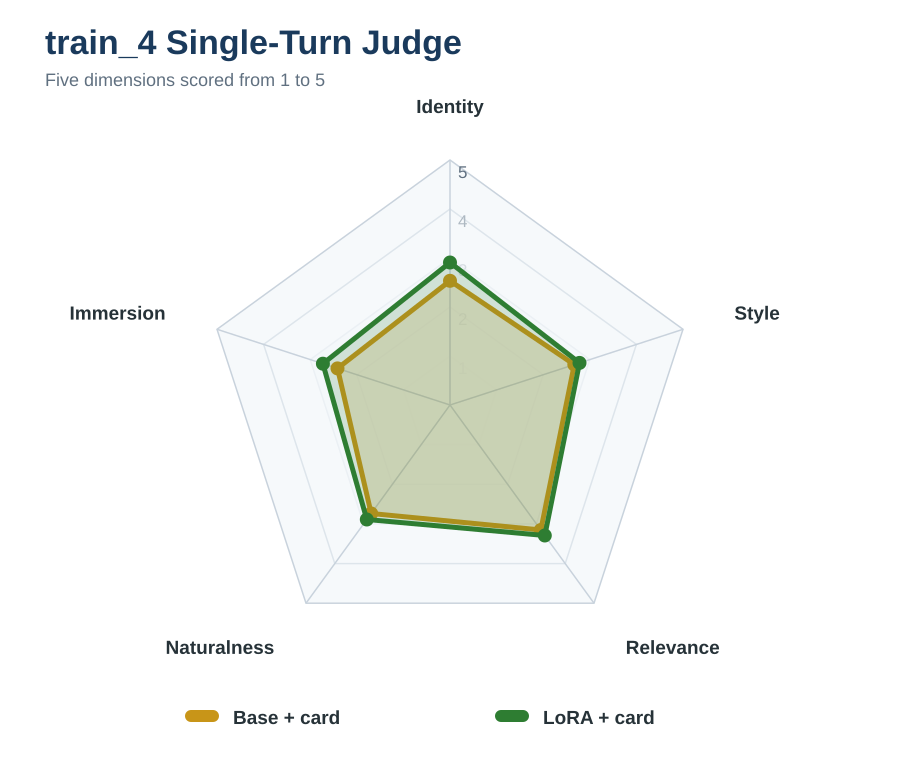
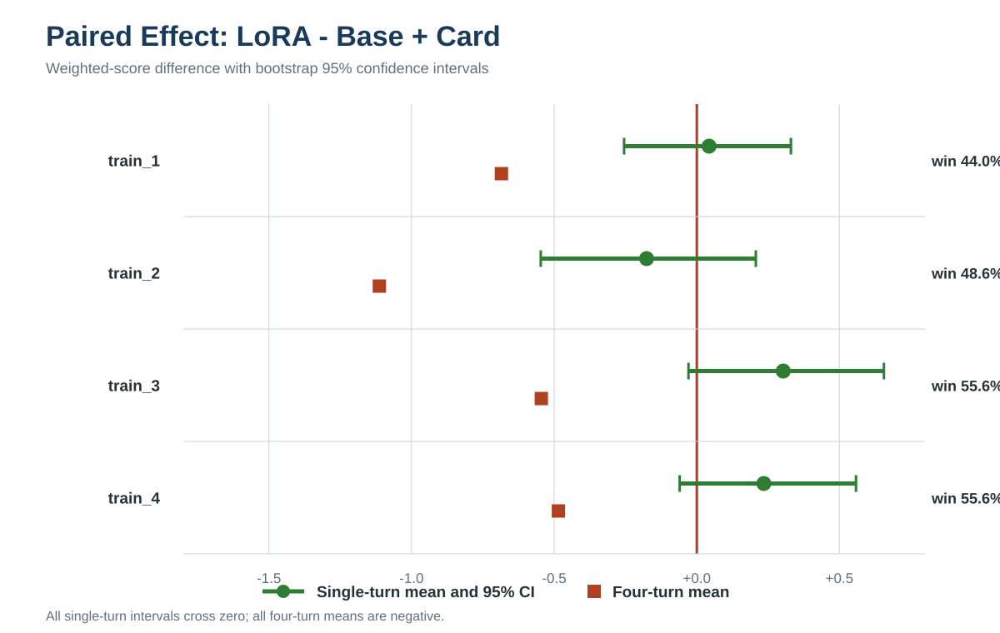
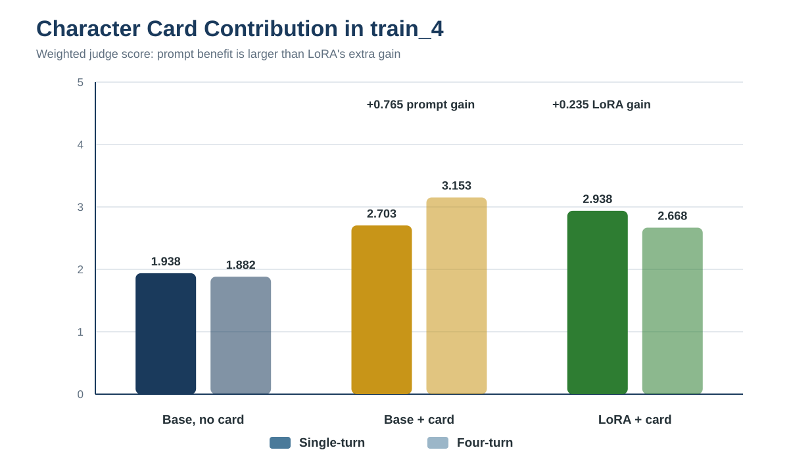
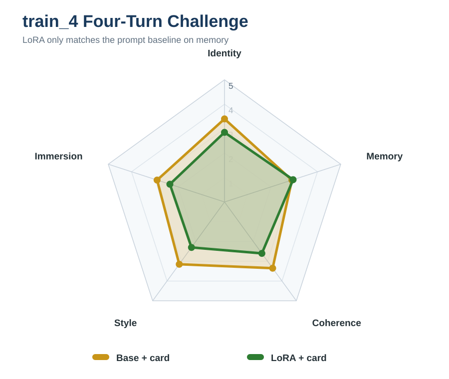

LoRA Fine-Tuning for Role-Play Dialogue Generation
Efficient Character Adaptation of Qwen2.5-3B-Instruct with 4-bit QLoRA
Yihan Liu · Xucheng Liao · Hongtan Long
Machine Learning Course Project · Department of Computer Science
Problem & Objective
Role-play dialogue requires a model to preserve a character's identity,
background, speaking style, and behavior while responding naturally across
turns. Prompting can provide these traits, but reliable adaptation remains
difficult with limited compute.
We fine-tune Qwen2.5-3B-Instruct with 4-bit QLoRA and test
whether the adapter adds measurable value beyond the same base model guided
by a character card.
3.09Bbase parameters
0.1193%trainable parameters
14.8 MBfinal adapter
55.6%best single-turn win rate
Usage / Inference Workflow
A character-card JSON is converted into the system prompt.
The current user message is formatted with Qwen's chat template and passed
to the base model plus LoRA adapter to generate an in-character response.

Figure 1. Usage and inference workflow.
The left side shows the information stored in a character card: name, persona,
background, speaking style, and appearance. These fields are joined into a
system prompt, combined with the current user message, and serialized by
Qwen's chat template before generation. The final response is produced by
Qwen2.5 with the LoRA adapter. Full dialogue history is passed in the archived
evaluation, whereas the current interactive chat() implementation
sends only the current user turn.
Data
The source is PIPPA-ShareGPT-formatted, with roughly 16k raw
role-play conversations. The versioned processed snapshot contains 11,515
conversations after filtering and deduplication.
Split
Rows
Share
Train
9,211
80.0%
Validation
1,152
10.0%
Test
1,152
10.0%
Total
11,515
100%
Processing preserves the system character card, removes old turns at message
boundaries when necessary, and computes loss only on assistant tokens.
Training Method

Figure 2. QLoRA training pipeline.
PIPPA role-play conversations are converted into system, user, and assistant
messages while preserving the character card and the most recent dialogue
turns. Only assistant tokens contribute to the training loss; system, user,
and padding tokens are masked with −100. Qwen2.5-3B is loaded with 4-bit NF4
quantization and frozen, while LoRA updates the q, k, v, and o attention
projections. The result is a 14.8 MB adapter containing 3.69M trainable
parameters, or 0.1193% of the base model.
Quantization 4-bit NF4 + double quantization
LoRA r / alpha 8 / 16, dropout 0.05
Target modules q / k / v / o_proj
Optimization batch 1, accumulation 8
Context 512 or 1024 tokens
Experiments 1–2 epochs, lr 2e-4 or 1e-4
Runs were completed on RTX 4080 SUPER, RTX 5060, NVIDIA vGPU-32GB, and
RTX 4060 Laptop hardware. GPU time is therefore reported per run rather than
treated as a controlled comparison.
Evaluation Protocol
Every experiment compares the same three systems:
Base, no cardBase + cardLoRA + card
Automatic metrics cover PPL, diversity, repetition, refusal, and performance.
MiniMax-M3 anonymously judges single-turn quality and a four-turn memory challenge.
Paired differences use bootstrap 95% confidence intervals.

Figure 3. Three-system evaluation protocol.
A frozen, filtered test set is evaluated under three controlled conditions:
Base without a character card, Base with a card, and LoRA with the same card.
All systems receive identical samples and generation settings, so the two
comparisons separate the contribution of prompting from the additional
contribution of LoRA. Automatic metrics measure likelihood, diversity,
repetition, refusal, and performance; MiniMax-M3 anonymously scores
single-turn and four-turn quality. Per-sample records, bootstrap intervals,
and saved manifests support paired and reproducible analysis.
Judge Dimensions
Identity — 35%
Style — 20%
Relevance — 20%
Naturalness — 15%
Immersion — 10%
The donut shows how the single-turn weighted score prioritizes role identity,
followed by style and relevance. Naturalness and immersion receive smaller but
still explicit contributions. Four-turn evaluation replaces relevance and
naturalness with Memory 25% and Coherence 20%, while Identity remains 25%.
Four LoRA Experiments
Valid Judge counts: 100 / 70 / 99 / 99.
Run
PPL ↓
Identity ↑
Weighted ↑
Win ↑
Rep. ↓
train_1
10.404
2.770
2.718
44.0%
25.6%
train_2
9.441
2.657
2.643
48.6%
40.2%
train_3
10.446
2.970
2.935
55.6%
23.9%
train_4
10.343
2.909
2.938
55.6%
18.1%

Figure 4. Experiment trend across four LoRA runs.
The green line is the single-turn pairwise win rate of LoRA + card against
Base + card, so values above 50% favor LoRA. The red line is the LoRA
repetition rate, where lower values are preferable. The 1024-token runs
train_3 and train_4 reach 55.6% wins, compared with 44.0% and 48.6% for the
512-token runs. Lowering the learning rate in train_4 preserves the win rate
while reducing repetition from 23.9% to 18.1%, although this remains well
above the 2.9% prompt-baseline rate.
Single-Turn Quality

Figure 5. train_4 single-turn Judge profile.
Each axis is scored from 1 to 5, and a polygon farther from the center
indicates stronger performance. LoRA + card is higher than Base + card on
identity, style, relevance, naturalness, and immersion, with the clearest
visible gains in identity and immersion. Its weighted mean rises from 2.703
to 2.938. This descriptive improvement should still be interpreted cautiously:
the paired weighted difference is +0.235, but its 95% confidence interval
[−0.060, 0.558] includes zero.
Paired Evidence

Figure 6. Paired effect of LoRA beyond character-card prompting.
The vertical zero line represents no difference between LoRA + card and
Base + card. Green circles show the mean single-turn weighted-score difference,
and the horizontal bars show bootstrap 95% confidence intervals. Although
train_3 and train_4 have positive means and 55.6% win rates, every interval
crosses zero, so a stable single-turn advantage is not established. Red
squares show the four-turn mean difference; all four are negative, indicating
consistent multi-turn degradation relative to the prompt baseline.
Interpretation: the adapter learns the role-play response
distribution, but current evidence supports a single-turn improvement trend,
not a stable significant advantage over character-card prompting.
Prompting Is a Strong Baseline

Figure 7. Contribution of the character card and LoRA.
Dark and light bars show weighted single-turn and four-turn scores for the
three train_4 systems. Adding the character card to the base model increases
the scores by 0.765 and 1.270 points, demonstrating that prompting alone is
a strong baseline. LoRA adds another 0.235 points in single-turn evaluation,
but reduces the four-turn score by 0.485. The accompanying pairwise table
confirms that both prompted systems clearly outperform Base without a card.
train_4 comparison
Left win
LoRA + card vs Base + card
55.6%
Base + card vs Base, no card
62.6%
LoRA + card vs Base, no card
69.7%
Four-Turn Challenge
train_4, 20 characters × 4 turns.
System
Identity
Memory
Coherence
Weighted
Base, no card
1.00
3.25
2.45
1.882
Base + card
3.40
2.90
3.35
3.153
LoRA + card
2.85
2.95
2.60
2.668

Figure 8. train_4 four-turn Judge profile.
The five axes test whether the character remains recognizable, remembers
earlier facts, responds coherently, preserves speaking style, and sustains
immersion across four turns. LoRA + card is nearly equal to Base + card on
memory, scoring 2.95 versus 2.90, but trails on every other dimension.
Identity falls from 3.40 to 2.85 and coherence from 3.35 to 2.60, producing
weighted scores of 2.668 versus 3.153. This pattern shows that improved
single-turn fidelity does not automatically transfer to multi-turn consistency.
Discussion
Training changed the distribution. LoRA PPL is 9.4–10.4,
far below the prompt baseline, showing that the adapter learned the target
response distribution. PPL alone is insufficient: train_2 combines the lowest
PPL with the highest repetition and weakest multi-turn score.
Prompting already contributes most of the gain. The character
card produces a large improvement without weight updates. LoRA's extra
single-turn gain is smaller and its confidence interval includes zero.
Repetition remains the clearest failure mode. train_4 lowers
LoRA repetition to 18.1%, but this is still about 6.3× the
Base + card rate of 2.9%.
Multi-turn quality remains weaker. All four LoRA variants
score below Base + card in the four-turn comparison. The evidence points to
data quality, repeated patterns, and insufficient multi-turn supervision as
joint concerns rather than proving a single cause.
Conclusion
4-bit QLoRA adapts a 3B model using only 3.69M trainable parameters.
The best variants reach a 55.6% single-turn win rate vs Base + card.
All single-turn paired 95% intervals include zero, so improvement is a trend.
Current LoRA variants remain below the prompt baseline in four-turn quality.
Lower learning rate reduces repetition but does not repair multi-turn degradation.
Efficient adaptation is feasible, but stronger data quality and multi-turn
supervision are required for dependable character consistency.
Next Steps
Fix and version one shared data snapshot for controlled ablations.
Run repetition-focused cleaning while keeping the frozen test set unchanged.
Increase high-quality multi-turn supervision and audit character leakage.
Add human blind evaluation or a second Judge and permit ties.
Retest learning rate, LoRA rank, and FFN targets on identical data.